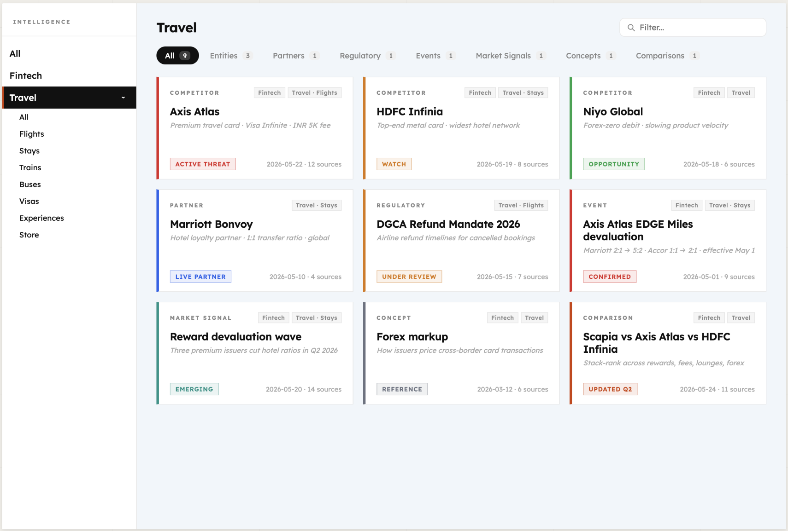
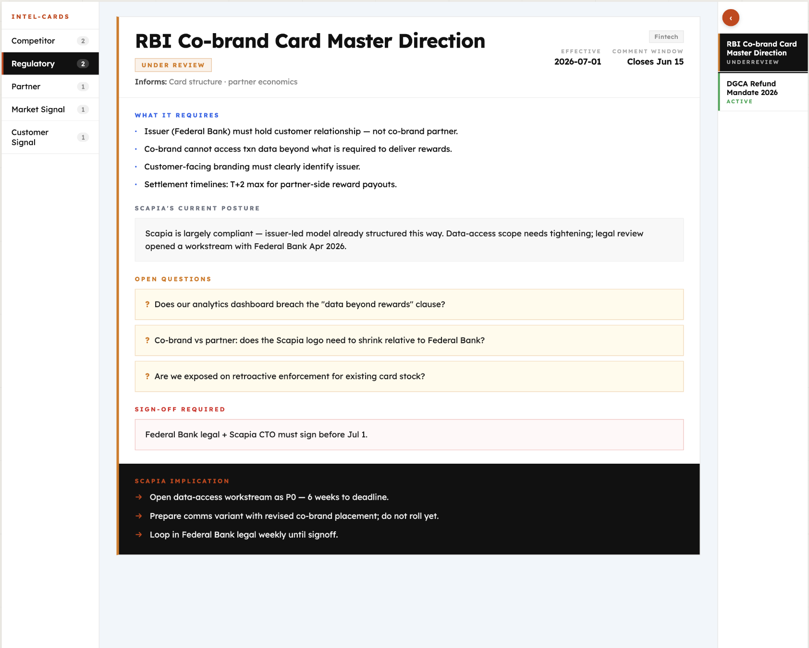
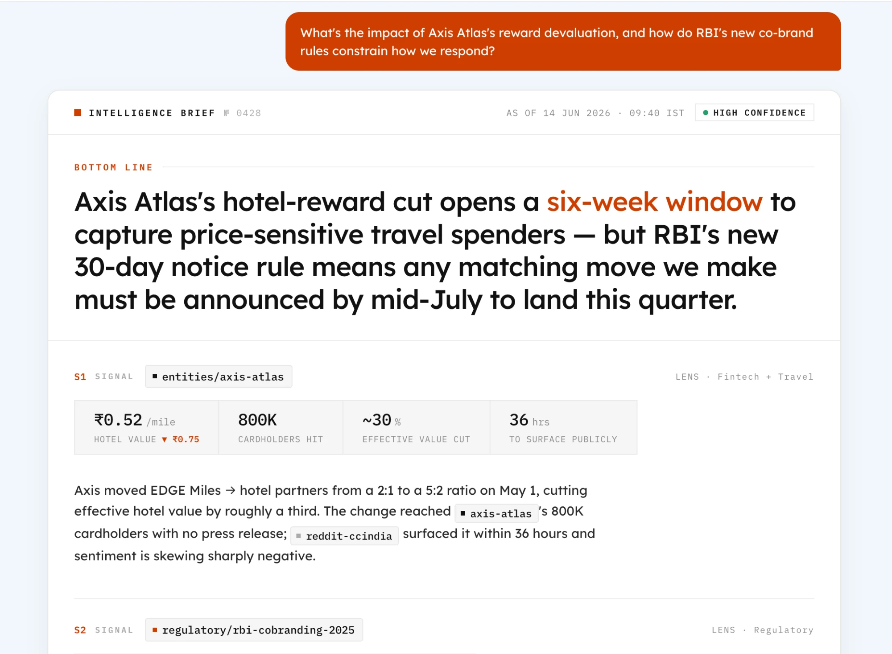
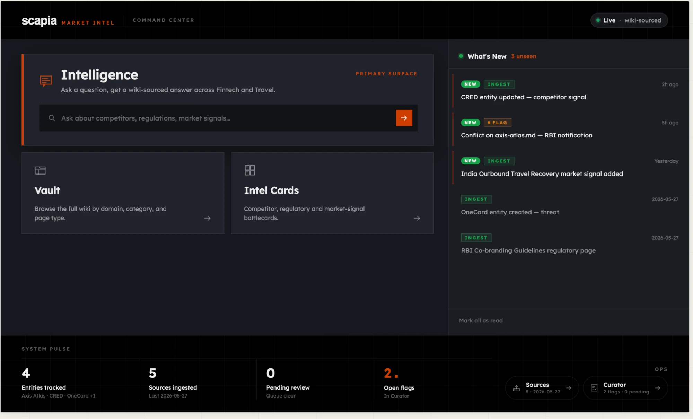

A living view of the markets Scapia operates in. Competitors, regulators, partners, signals. Maintained by an LLM, fed by Scapia, queryable by leaders. Built so the picture stays current without anyone having to remember to update it.
Competitive and regulatory intelligence at a fast paced organisation tends to be distributed. It lives across people, conversations, and documents. When a leader needs it, they ask around internally, do a quick search, or work off whatever was last remembered. That is not a failure of effort. It is what happens when there is no designated place for intelligence to live.
Distributed intelligence has four properties that make it dangerous at scale:
The gap this creates is direct. No single, trustworthy, always current view of competitors. No single source of truth on the regulatory landscape.
The typical attempts to fix this, a Confluence wiki, a Notion doc, a Slack channel pinned with links, all fail the same way. They require humans to do the maintenance. Humans get busy. The maintenance stops. The wiki goes stale. Within weeks it is trusted by no one, used by no one, and the org reverts to asking around. This is not a discipline problem. It is structural. Maintenance burden grows faster than value when humans are responsible for keeping it current.
Standard document AI retrieves chunks at query time and re-derives an answer from scratch on every question. Nothing accumulates. This system works differently. The LLM reads each source at ingest, extracts the intelligence, and integrates it into a persistent wiki. Knowledge is compiled once and kept current. The 50th source enriches an existing structure rather than adding to a pile.
Note. The insight that persistent, compounding memory is more valuable than on demand retrieval is not new. Mem0 applies it to conversational AI, giving assistants memory of past user interactions across sessions. This system applies the same insight to a different problem: not remembering what a user said, but building an organisation's collective picture of a market.
Immutable. The LLM reads from these, never modifies them. The audit trail for every claim in the wiki.
LLM maintained pages. One page per competitor, regulation, partner, market event. The LLM creates, updates, cross references, and flags contradictions. A human never writes a wiki page directly.
A configuration the LLM follows. It defines page types, structure, and the exact workflow. This is what makes the LLM a disciplined wiki maintainer rather than a generic assistant.
| Operation | What happens |
|---|---|
| Ingest | Source enters. LLM reads it. Runs the filter. Integrates signal into relevant pages. Contradictions flagged immediately. |
| Query | Leader asks a question. LLM reads relevant pages. Returns a sourced answer with citations traceable to specific pages and raw sources. |
| Lint | Periodic health check. Scans for contradictions, stale claims, orphan pages, missing cross references, gaps. Detects and flags, never silently fixes. |
The system has three distinct relationships with humans. Each does one thing and only that thing. That is what keeps the load light.
| Role | Who | What they do | Time |
|---|---|---|---|
| Contributor | The whole org (eventually) | Submit signals encountered in daily work. Reddit threads, news, internal notes. No research, no curation. | About 45 seconds per submission |
| Curator | One reviewer | Approve borderline submissions, resolve flagged contradictions, direct gaps. The system does the bookkeeping. The curator does the thinking. | 30 to 60 minutes per week |
| Querier | Leaders | Ask questions, act on answers. Never see the ingestion flow or the wiki structure. | As long as asking a question |
The model changes who owns the intelligence. Today it lives with whoever did the research. In this system it lives in the wiki. Contributed by everyone, curated by one, accessible to all.
Not all market intelligence is the same shape. A miles devaluation by a competitor is read differently from an RBI circular, which is read differently from a quarterly category growth signal. The system gives each type its own structure so the wiki reflects how the intelligence actually behaves.
| Type | What it captures | Why the treatment is different |
|---|---|---|
| Competitors | One page per competitor. Axis Atlas, CRED, HDFC Diners Black, IndiGo, MakeMyTrip, OneCard, and others. | Multi perspective and additive. A competitor lives in both Fintech and Travel. Each new source enriches the page rather than replacing it. Prior context is never overwritten. |
| Regulatory | One page per regulation. RBI circulars, NPCI guidelines, DPDP Rules, co brand card rules, network rules. | One posture, no perspectives. Indian fintech regulation is interpretive. The system surfaces and routes. It never concludes on interpretation. Conflicts are flagged for legal, never silently resolved. |
| Partners | One page per ecosystem partner. Federal Bank, Visa, Mastercard, RuPay, OTAs, loyalty programs. | Single perspective, status tracked. Partners are tracked for relationship health (Active, Negotiating, At Risk) and what each side gets out of it. |
| Events | One page per discrete market moment. A launch, a price change, a devaluation, a funding round, a leadership hire, a partnership. | Time stamped and atomic. An event links back to the entity it happened to. It tells the story over time without bloating the entity page. |
| Market signals | One page per macro trend. Category growth, financial health, regulatory direction. | Tailwind, headwind, or neutral. Macro context that frames the competitor and regulatory work. What is growing, what is shrinking, what is coming. |
Two additional supporting types round out the schema. Customer signals capture voice of customer extracted from App Store reviews, Reddit, and switching threads. Concepts are shared mechanics (FX markup, MDR, credit on UPI economics) that are referenced by many pages. Each has its own structure for the same reason: different shapes deserve different treatment.
Every wiki page sits at the intersection of two axes. The first axis is the business domain Scapia operates in. The second axis is the type of intelligence the page captures. A single page can occupy multiple positions on either axis. That is the point.
An entity page can carry both. A miles devaluation by Axis Atlas affects Fintech (card earn rate comparison) and Travel (redemption value). It is tagged accordingly and shows up under both filters.
A purely flat tag system loses the picture. Strict folders force a single "home" per page. Two axes let a leader filter by both at once. "Show me everything that is a regulatory page in the fintech domain." Or "show me partner pages that touch travel, flights." The wiki's UI surfaces (Vault, Intel Cards) are built directly on these two axes.
| Path | How it works |
|---|---|
| Automated crawler, tracked sources | A scheduler runs at a configured interval. Hourly for high priority pages, daily for standard monitoring. For each monitored URL it fetches the current page, diffs it against the stored version, and if content has changed it writes the diff into the system and triggers the filter. The filter treats crawled content the same as a human submission. Same Maker, same Checker, same curator review path. The only difference is upstream: no human was involved in spotting the signal. The wiki grows while the team sleeps. |
| Daily news email parsing | The recurring news email Scapia already receives is parsed automatically. Each story becomes a candidate source that runs through the filter. Stories that score below threshold are dropped. The rest enrich the relevant wiki pages. |
| Agentic source discovery | An autonomous agent periodically scouts for new relevant sources. RBI press releases, competitor blog posts, ratings agency reports. It submits them through the same filter. The wiki's gap list informs what the agent looks for. |
All three feed into the same filter and the same curator review path. The investment in the filter pays compounding dividends. Each new ingestion lane is a multiplier on the existing pipeline, not a parallel system.
Org wide contribution means volume. Volume without a filter means noise. Duplicate sources, generic listicles, low signal content reaching the wiki and degrading the intelligence it holds. The filter exists to ensure the wiki only sees what is genuinely new and genuinely useful. Everything else is stopped before it touches a single page.
Every submission is scored across three checks. Relevance: does this connect to anything the wiki already knows? Duplication: does this add anything the wiki does not already know? Incremental value: what does this actually contribute? Clear passes and clear rejects are routed instantly. Only the uncertain middle band reaches the next step.
Submissions that pass Layer 1 but remain uncertain reach the curator as a pre enriched card. Source type, entities mentioned, which wiki pages it would update, both filter scores, and the reason each was given. The curator approves or rejects in one click. They are reviewing the system's assessment, not re reading the source.
No single technique covers the full problem. The filter needs two things: a reliable score and a reliable confidence signal. These are different problems solved by different techniques.
| Problem | Technique | Why |
|---|---|---|
| Producing the score | LLM as Judge with explicit rubric | Structured, auditable, improves with better prompting |
| Producing the confidence signal | Maker, Checker | Disagreement equals uncertainty. It emerges naturally. |
| Improving over time | Curator approvals and rejections become labelled data | The filter learns from its own mistakes |
| Multi pass structure | Borrowed from auto research patterns | Relevance, duplication, and quality scored as separate checks, not one blended judgement |
Maker scores the source across the three criteria. Score 8 to 10 means auto approve, Checker skipped. Score 1 to 3 means auto reject, Checker skipped. Only a Maker score of 4 to 7 triggers the Checker.
Checker runs the same three checks adversarially. Its prompt explicitly tells it to assume the source is low value and look for reasons to reject. This is deliberate. Two passes of the same model on the same rubric share blind spots and tend to agree. The Checker's value comes from the opposing prompt, not from being a second pair of eyes.
A generic chatbot answers any question and is great at none of them. The three surfaces below exist because leaders at Scapia have specific questions, in a specific shape, recurring on a specific cadence. Each surface is purpose built around one of those questions. What is the picture. What is the takeaway. What is the answer to the thing in my head right now. None of them would survive as features of a general purpose assistant.
The three surfaces are not interchangeable. Each does a job the others cannot.
Surface 01
For when a leader wants the picture, not an answer.
Every wiki page rendered as a filterable card grid. Filter by domain (Fintech and Travel and its seven sub categories) and by intelligence type (Competitor, Regulatory, Partner, Event, Market Signal). Click a card and the full page slides in from the right with frontmatter, body, citations, and the Intel section.
The Vault answers questions before they are asked. A leader scanning the entities filter sees every competitor at a glance with their current signal: opportunity, watch, threat. That glance produces ten micro decisions. None of them required a chat box.

Note: all content shown is mockup test data, not real.
Surface 02
For when a leader needs "what does Scapia do about this," not "what does this source say."
Every wiki page that has a strategic stake renders as a structured card with five tabs: Competitor, Regulatory, Partner, Market Signal, Customer Signal. Each card surfaces the agent's reasoning. Where Scapia Wins. Where They Are Ahead. Scapia Implication (verb first actions). Recent Moves. The wiki body is the source. The Intel card is the distillation.
This surface exists because raw wiki pages are too dense for a glance. A competitor page is 300 lines of cited prose. The Intel card is the four things the team needs to do about it. The card and the page link to each other. Read the card for the decision. Open the page for the proof.

Note: all content shown is mockup test data, not real.
Surface 03
For the question already in the leader's head.
Plain English question in, Brief format answer out. The Brief has a fixed shape. A one sentence Bottom Line. Two or three Signal sections, each citing one wiki page. A Scapia Implication block with verb first bullets. A Confidence line with a because clause. Every claim links back to a wiki page. Every wiki page links back to its raw source. Three clicks from answer to original PDF.
Charts render automatically when the answer compares three or more numeric values. Follow up questions in the same thread are treated as elaborations, not new queries (see Section 10).

Note: all content shown is mockup test data, not real.
The Query surface is pull. The leader has to know the question first. The Vault and Intel Cards are push. They show the leader what is worth knowing without a question being asked. That is the difference between this and ChatGPT. ChatGPT waits. The Vault and Intel Cards do not.
This matters because the most valuable intelligence is the kind a leader did not know to ask about. A regulatory shift that does not yet have a name. A competitor's move that has not been written up anywhere. The Vault and Intel Cards are how the wiki introduces those to the leader.
Two features turn the wiki from a destination into something that comes to the user.
The homepage carries a feed of every source that has cleared the filter in the last 24 hours, plus the earlier unseen items. Each feed row is a one line headline plus the wiki page it touches. Click and it opens that page in a side panel. Unread state is tracked per user. Orange dots appear on items the leader has not opened yet.

Note: all content shown is mockup test data, not real.
A weekly email summarising what the wiki gained that week. New entity pages, regulatory updates, notable market signals, recent events. Sent through a transactional email provider so the digest lands in the leader's inbox without them having to open the app. The leader can pause their digest from the account page.
The Intelligence input now lives on the homepage hero, not behind a separate navigation step. A leader types their question into the homepage and Enter takes them straight to the streaming answer view. The friction from "I have a question" to "I have an answer" is one keystroke.
Every question and its answer is preserved in a personal thread history. A leader can scroll back to last week's question, re open the answer, and ask a follow up against the same context. Threads are scoped to the leader who asked. Never shared, never written back to the wiki.
This preserves a clean separation. The wiki is the outside view, what is happening in the market. The threads are the inside view, Scapia's interpretation of it for a specific question. Mixing them would pollute the wiki with half formed takes.
Not every message a leader types is a question deserving a full Brief. Before the system spins up the expensive query path, a lightweight classifier reads the message and routes it into one of five intents.
| Intent | What it means | How the system responds |
|---|---|---|
brief_query | A genuine market intelligence question | Full Brief format answer with citations and (if relevant) a chart |
clarification | A follow up to the previous answer. "What about Travel?" "Why does that matter?" | Elaborates on the previous Brief using the same context. Does not re derive from scratch. |
meta | A question about the system itself. "What can you do?" "How does this work?" | A short canned answer about the system's scope and surfaces |
greeting | "hi", "thanks", "good morning" | A polite one line reply. No LLM cost. No Brief format. |
out_of_scope | A question that is not about Scapia, fintech, travel, or the market | A clear "this isn't what I'm built for" reply with a hint of what is in scope |
Why this matters for follow ups specifically. When a leader reads a Brief about Axis Atlas and types "what about HDFC?", the classifier recognises this as a clarification in an active thread, not a fresh standalone query. The system re uses the thread context (the last few turns) rather than starting from zero. The follow up feels conversational because it is conversational. The thread is the memory.
Greetings and out of scope messages get fast, cheap replies. No expensive context assembly. No LLM streaming. Genuine intelligence questions get the full treatment. The classifier protects the cost ceiling without the leader ever noticing the gate.
Two end to end flows define how the system actually moves. One for getting intelligence in. One for getting it out.
From a curator pasting a URL, through the filter, into structured wiki pages, with the audit trail preserved at every step.
From a leader's plain English question, through intent classification, context assembly, to a streaming Brief.
Product handbook · v1 · maintained alongside the product. New features and surfaces are appended here as they ship. This document is the leadership facing view of what the product is and where it is headed.